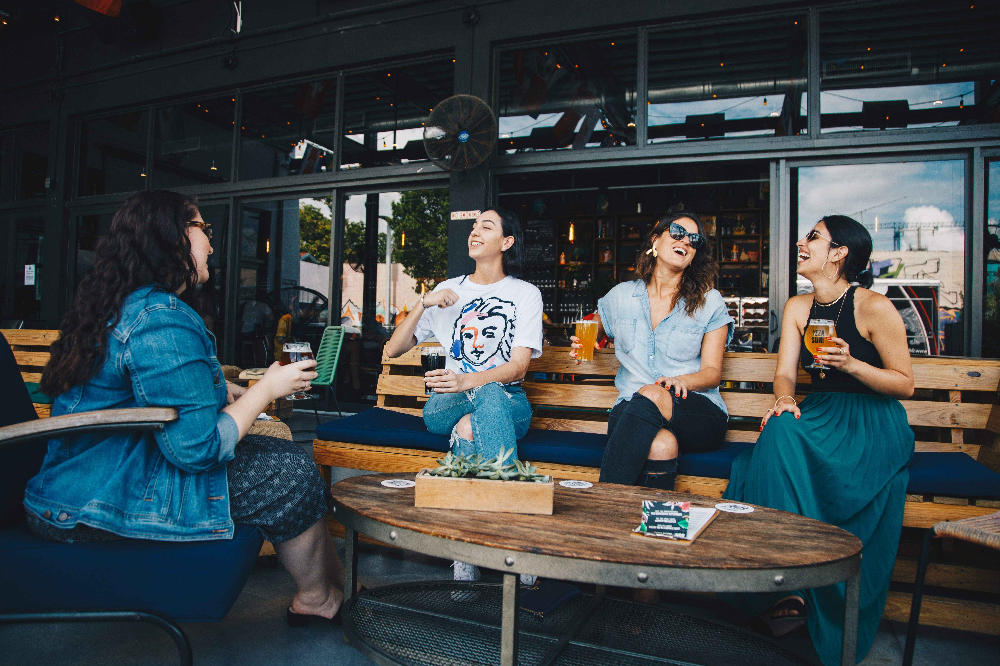
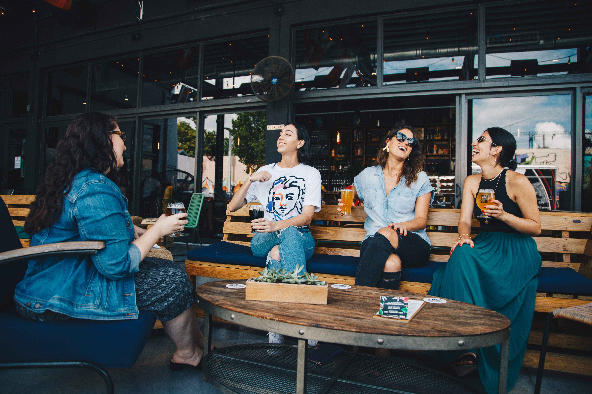
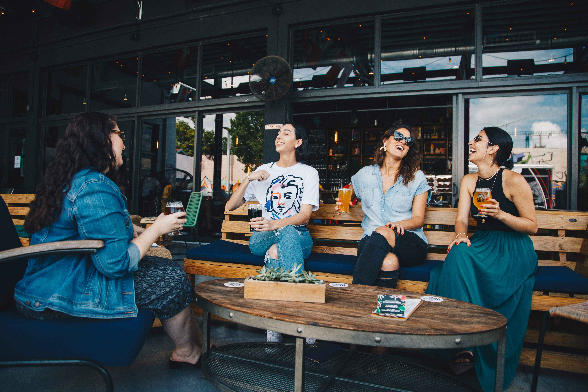
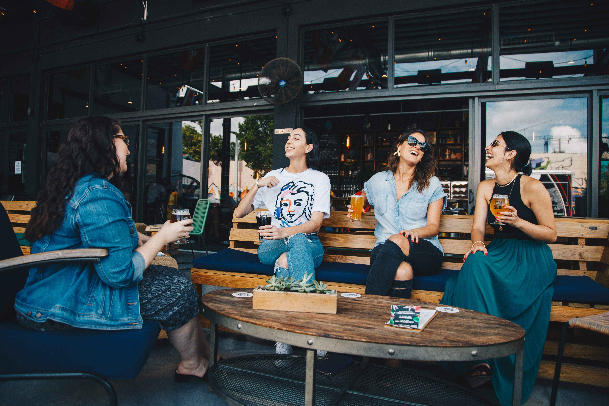

Universitas Stikubank memiliki banyak situs website yang bisa
kalian jelajahi
untuk memudahkan kalian mencari beragam informasi.


Untuk mendukung penyelenggaraan
pendidikan,
kami menyediakan
layanan informasi yang lebih
baik dan
efektif.
Dari pembuatan website jurnal hingga
tugas operasional seperti
proses
penyerahan naskah penulis, peer
review, pengeditan,
publikasi,
pengarsipan dan indeks jurnal.
Memanfaatkan teknologi informasi dan
komunikasi untuk
memudahkan
metode pembelajaran.

Menyaring dan menemukan bibit unggulan
yang memungkinkan
untuk mencetak lulusan
yang
terbaik kami menyediakan layanan PMB
secara online.
S1 Manajemen, S2 Manajemen, S1 Akuntansi,
Pendidikan Profesi Akuntansi
S1 Teknik Informatika, S1 Sistem Informasi, S1 Teknik Industri
S1 Ilmu Hukum, S1 Sastra Inggris
D3 Perhotelan, D3 Keuangan dan Perbankan, D3 Manajemen Informatika
Makin lengkap dengan semua kebutuhan
masa depanmu.
Universitas Stikubank (UNISBANK)
Semarang berdiri sejak 1968, senantiasa
berkomitmen untuk memberikan pendidikan
terbaik.


Bekerja sesuai
bidang studi yang
dipelajari.
Mendapatkan
pekerjaan sebelum
lulus
Mendapatkan
pekerjaan dibawah 3
bulan setelah wisuda.


Total alumni Unisbank saat ini sebanyak
39.077 orang
Stikubank tidak hanya memberikan saya pendidikan terbaik, namun juga
membentuk kepribadian saya menjadi mandiri, kompetitif dan percaya diri.
Angkatan 1965
Kampus Mugas :
Jl. Trilomba Juang No 1 Semarang 50241
Telp (62-24) 8451976, 8311668 Fax (024) 8443240
Kampus Kendeng :
Jl. Kendeng V Bendan Ngisor Semarang
Telp (62-24) 8414970 Fax (024) 8441738
Contact Person 1 : (024)8311668
Contact Person 2 : (024)8414970
Whatsapp : 082133332256
Whatsapp : 08112925394